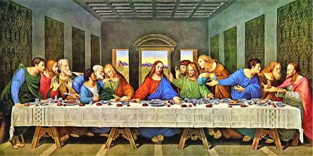
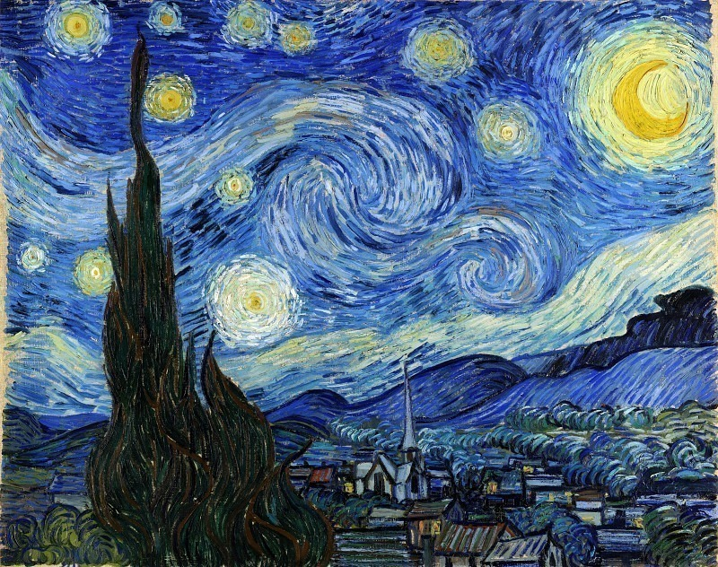

Утро в сосновом лесу
Шишкин И.|Савицкий К.
Тайная вечере
Леонардо да Винчи
Звездная ночь
Винсент Ван Гог

Крик
Эдвард Мунк

Дама с горностаем
Леонардо да Винчи

Мона Лиза
Специально для «Моны Лизы» Леонардо разработал особую технику сфумато, которая создает мягкие тени и плавные переходы.
Подробнее
Дама с горностаем
По мнению многих исследователей, это портрет Чечилии Галлерани — любовницы Лодовико Сфорца, герцога Миланского
Подробнее
Крик
Крик Мунк написал страдая заболеванием отсечения сетчатки глаза. Волнообразные линии есть результат видения мира с заболеванием.
Подробнее
Утро в сосновом лесу
Одно из наиболее популярных полотен Шишкина, один из самых известных пейзажей в истории русского искусства.
ПодробнееИнтересный факт
Одна дама приобрела на рынке всего за 10 рублей совершенно бездарную картину с подписью «И.Репин». Когда ценительница живописи показала эту работу Илье Ефимовичу, он рассмеялся и дописал «Это не Репин».
ПодробнееЗвездная ночь
Представляет вид из восточного окна спальни Ван Гога в Сен-Реми-де-Прованс на предрассветное небо и вымышленную деревню.
ПодробнееИнтересный факт
В 1893 году, за 20 лет до Малевича, Альфонс Алле, французский писатель-юморист, нарисовал свой «черный квадрат». Правда, называлась картина Алле «Битва чернокожих в глубокой пещере тёмной ночью».
ПодробнееТайная вечере
Ранее ошибочно называлась «фреской», но было установлено: роспись выполнена яичной темперой по масляному грунту из свинцовых белил.
Подробнее
Девушка с жемчужной серёжкой
Всего у художника было 15 детей, а на картине, предположительно, может быть изображена старшая из них — Мария.
Подробнее